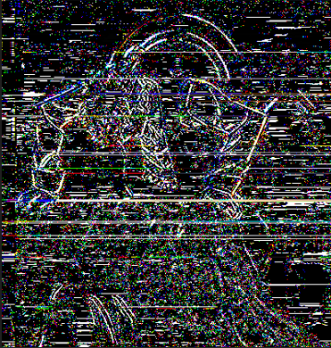

Glitch Art
Hello, this is the page for glitch art!



The series of images were made in reference to the passing of a beloved racehorse Haru Urara. The series of glitched images is meant to convey the sense of loss, pain, and acceptance of reality and a chance to move on. Loss of color, detail, and structure, pain from turmoil, and acceptance with new colors with underlying uncertainty.